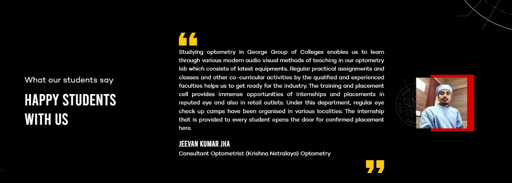
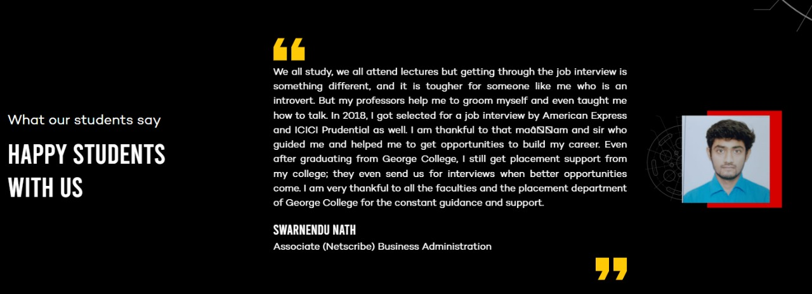
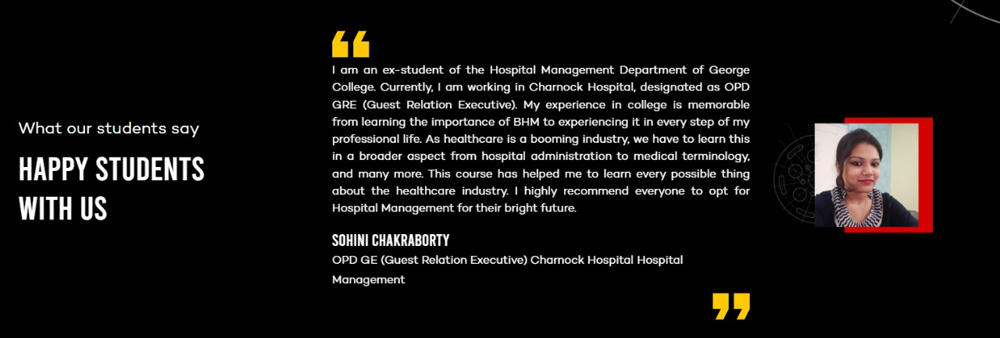
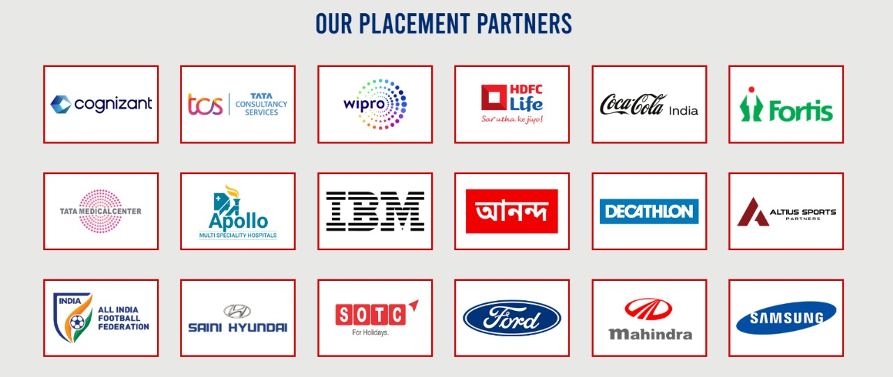

At The George College, you can benefit from on-campus recruitment and off campus recruitments for all students. We will prepare you for recruitments with practice sessions involving Group Discussions and Mock Interviews. We will ensure that you learn soft skills to help you in your placement. Our faculty will take care of your overall personality development. These will be undertaken through grooming sessions arranged by the institute.
As part of preparing our students for interviews, we will organize industry visits for them to offer them a much-needed industry exposure. There will be regular workshops and seminars conducted by leading industry experts. We will be arranging for summer training and internship for students of Hospital Management and industrial training for the students of Bachelor of Business Administration. Students in the Optometry Department can enjoy a 1-year internship.
Besides summer training in different industries, we will organize webinars or online seminars. The institute will also arrange for winter internship for students in different departments. To develop technical skills, BCA students will be provided with industry-relevant training. Workshops to improve aptitude and logical reasoning will also be routinely organized at the institute.



